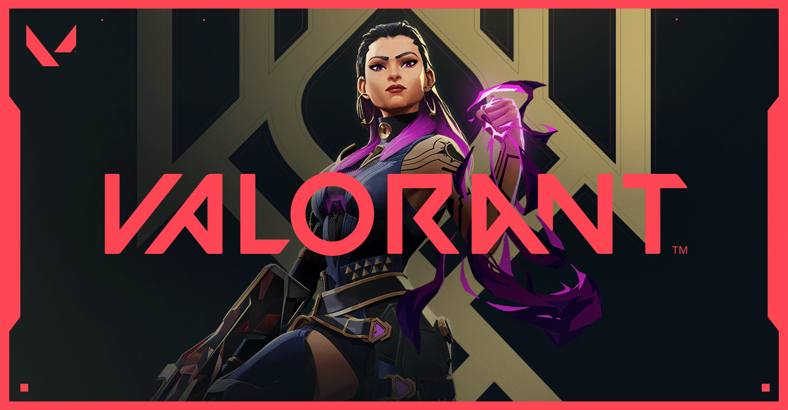

Valorant é um FPS tático online que mistura uso de armas e habilidades especiais. Cada personagem tem seu próprio kit de skills. O jogo é bem parecido com Counter-Strike. Dentro de um mapa, dois times de cinco integrantes cada precisam alternar entre ataque e defesa. Desenvolvido pela Riot Games, Valorant foi lançado oficialmente em 2020. Desde então, vem ganhando cada vez mais popularidade. Em dezembro, o título atingiu a incrível marca de 17 milhões de usuários ativos espalhados pelo mundo. A maioria das pessoas joga casualmente, mas existem players que utilizam o Valorant como ganha-pão, através de streams ou campeonatos profissionais.
O título conta com um elenco de personagens com habilidades específicas e mapas, onde o objetivo é ativar um bomba ou defender um território. Os times começam a partida com ataque ou defesa, e trocam de lado na décima segunda rodada. Vence a equipe que fizer 13 pontos primeiro, e os jogos têm até 24 rounds. O game tem uma economia parecida com a do CS:GO e disponibiliza diversos armamentos para compra no início de cada rodada.
Um dos designers de VALORANT, Trevor "Classick" Romlesk vê o jogo dividido em três períodos distintos: inteligência, planejamento e execução. Combinar bem diferentes agentes, de maneira a ganhar espaço no mapa, controlar as próprias movimentações e colocar em prática o que foi pensado, no momento correto, é essencial para levar a melhor sobre os adversários. Vale lembrar: o rival pode escolher os mesmos personagens, sem restrições, o que torna a maestria com as habilidades de cada um o diferencial nos duelos.
Os diferentes modos de jogo tornam a experiência de VALORANT ainda mais variada. Há partidas casuais e ranqueadas - estas, com classificações em oito diferentes classes (Ferro, Bronze, Prata, Ouro, Platina, Diamante, Imortal e Radiante), sendo as sete primeiras subdivididas em níveis 1, 2 e 3 e tendo a última como mais alta do jogo, em categoria única. Há também o modo Deathmatch, que permite um jogo mais rápido nos moldes "cada um por si", ideal para quem quer treinar sua mira sem se preocupar com a coordenação de táticas em equipe, além do modo Disputa pela Spike e do espaço de treino - dividido entre quatro categorias: estande aberto, teste de tiro, armação e desarme de spike.
Requisitos Mínimos (30fps)
-CPU: Intel Core 2 Duo E8400 ou AMD Athlon 200GE
-GPU: Intel HD 4000 ou Radeon R5 200
-OS: Windows 7 ou Superior (x64)
-RAM: 4GB
-VRAM: 1GB
Requisitos Recomendados (60fps)
-CPU: Intel i3-4150 ou AMD Ryzen 3 1200
-GPU: Geforce GT 730 ou Radeon R7 240
-OS: Windows 7 ou Superior (x64)
-RAM: 4GB
-VRAM: 1GB
Alta Performance (+144fps)
-CPU: Intel i5-9400F 2.9GHz ou AMD Ryzen 5 2600X
-GPU: GTX 1050 Ti ou Radeon R7 370
-OS: Windows 7 ou Superior (x64)
-RAM: 4GB
-VRAM: 1GB